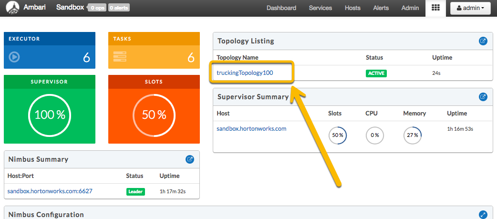

This tutorial will cover the core concepts of Storm, and walk through setting up Storm on the sandbox. We will also run a small Storm application, which we'll take a closer look at in the next tutorial.
Imagine a trucking company that dispatches trucks across the country. The trucks are outfitted with sensors that collect data - data like the name of the driver, the route the truck is bound for, the speed of the truck, and even what event recently occured (speeding, the truck weaving out of its lane, following too closely, etc). Data like this is generated very often, say once per second and is then streamed back to the company's servers.
Additionally, the company is also polling an internet service for information about traffic congestion on the different trucking routes. However, since congestion changes gradually, this information is being generated only once a minute.
The company needs a way to process both these streams of data, and combine them in such a way that data from the truck is combined with the most up-to-date congestion data. Additionally, they want to run some analysis on the data so that it can make sure trucks are traveling on time but also keeping cargo safe. Oh, and this also needs to be done in real-time!
Why real-time? The trucking company benefits by having a system in place that injests data from multiple sources, correlates these independant sources of data, runs analysis and intelligently reports on important events going on and even actions that the company can do to immediately improve the situation. This even includes catching imminent truck breakdowns before they occur and analyzing driving habits to predit accidents before the driver gets into one!
Sounds like an important task - this is where Storm comes in.
Apache Storm is a free and open source data processing engine. It can process and act on massive volumes of data in real-time, performing virtually any type of operation or computation as data flows through its components.
Storm exposes a set of components for doing real-time computation. Like how MapReduce greatly eases the writing of parallel batch processing, Storm's components greatly ease the writing of parallel, real-time computation.
Storm can be used for processing messages and updating databases (stream processing), doing a continuous query on data streams and streaming the results into clients (continuous computation), parallelizing an intense query like a search query on the fly (distributed RPC), and more.
Now that we have a general idea of the power of Storm, let's look at its different components, our building blocks when defining a Storm process, and what they're used for.
Log into Ambari (by default the URL is sandbox.hortonworks.com:8080 if you've been following the tutorials) and look for Storm in the services list. If Storm is not started, select it from the services list and click on "Start" under the "Service Actions" button.


Now that we're sure Storm is up and running, let's download a file onto the sandbox. Open up a terminal and make sure you are SSH'd into the sandbox for these next few commands.
wget https://github.com/orendain/storm-tutorial-100/raw/master/storm-tutorial-100-1.0.jar
Note: Don't worry about not knowing what this topology does just yet. We'll cover this in the next section and even learn to build out this Storm topology from scratch!
Included in this JAR is a JVM class file that defines a Storm topology. The name of the class is TruckingTopology100 with the full path of hortonworks.tutorial.storm-100.TruckingTopology100. Let's direct Storm to deploy this topology.
storm jar storm-demo-100.jar hortonworks.tutorial.TruckingTopology100
Here, we're telling storm to use the specified JAR to deploy the specified topology that is stored inside that JAR. Storm automatically handles deploying the topology and starts running the different components (spouts and bolts).
Alright! You've just deployed a Storm topology! Next, let's take a look at what this topology looks like and how we explore information about that running topology.
Open up the Storm View by navigating to Ambari's Views icon and selecting "Storm View."


This opens up the Storm View where you'll be able to see all of the running topologies, configurations and metrics relating to Storm.
Select "truckingTopology100" from the "Topology Listing" panel to get a closer look at the topology we just deployed.

Using the view that comes up, you'd be able to read and navigate through useful metrics, as well as perform operations like deactivating or killing the topology.
Now that we've learned about what Storm is, how to run a topology, and where to go to view information about the running topology, let's shift our attention to the Storm API. In the next section, we'll learn a bit more about the different Storm components (spouts, bolts, streams) and walk through how to use them to build out a topology using the Scala programming language.